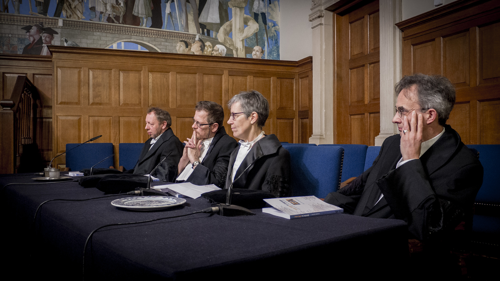

Ever been to a PhD defense in the Netherlands? It turns out, the dutch really want to pretend it's a big thing, so they dress funny and put on a fancy show. After the candidate has finished writing the book, it has been submitted and approved, they book a time slot for the official ceremony months in advance. Here are some pictures of what mine looked like. Compared to most defenses I've been to, this time the room was pretty empty.


After the actual defense (45 minutes of Q&A), the supervisor gives a little lighthearted speech praising the candidate. Here is mine.